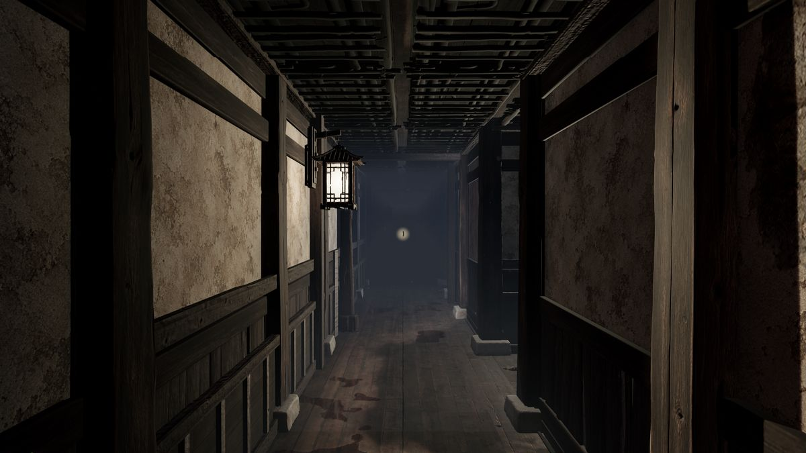
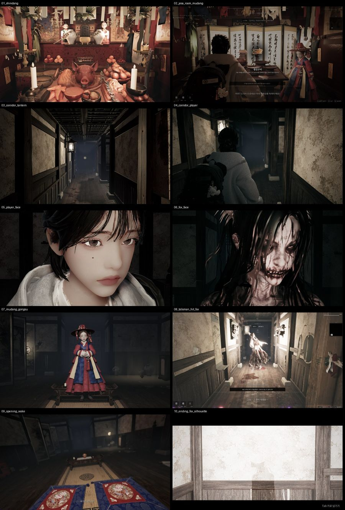
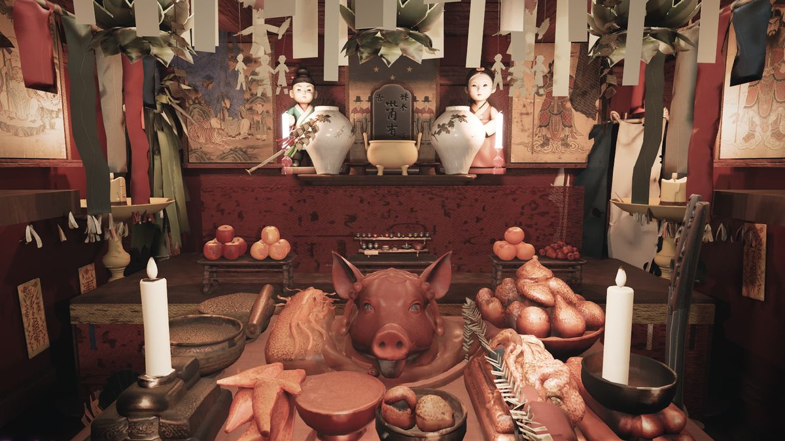
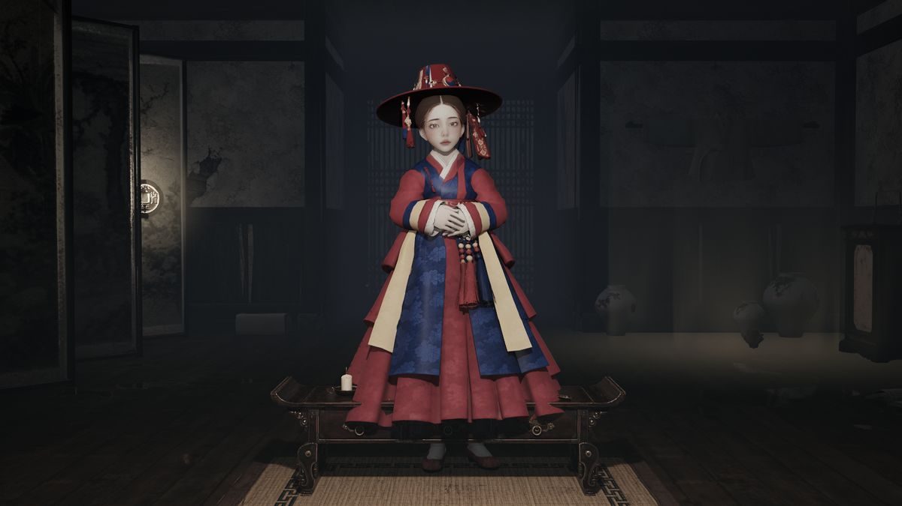
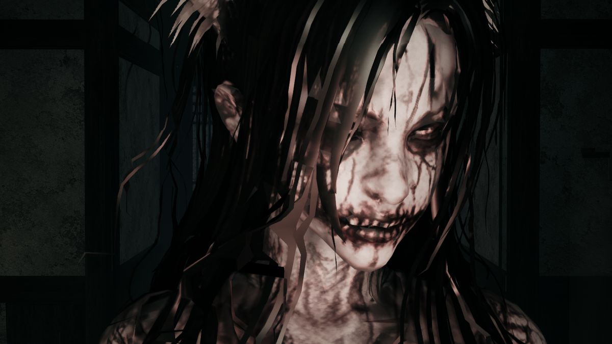
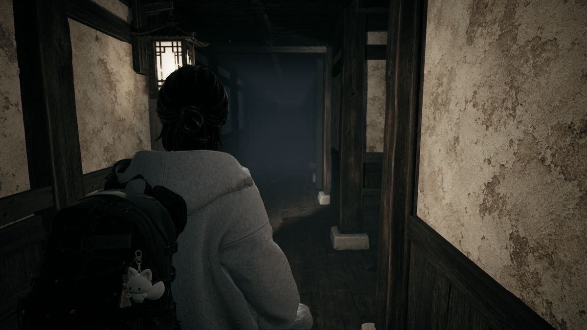
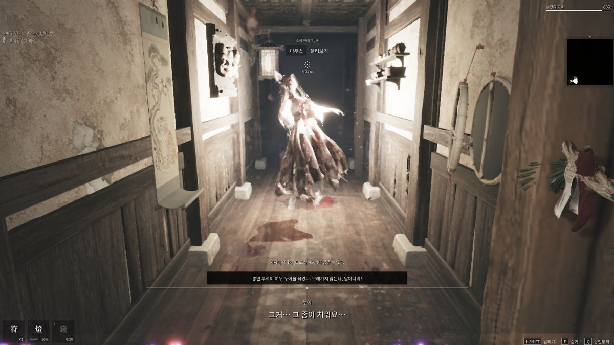
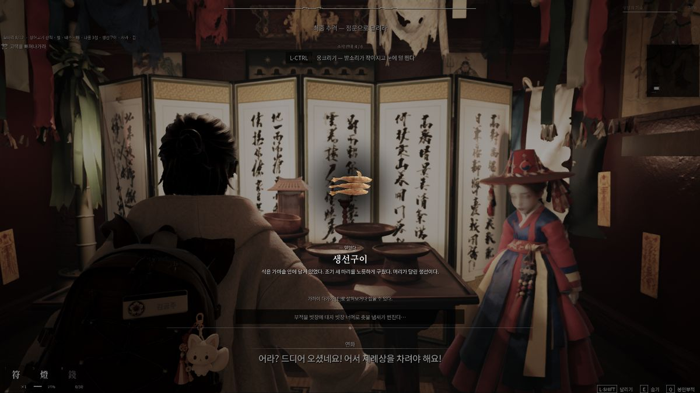
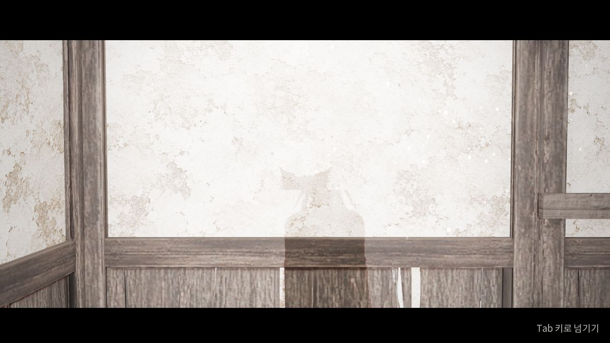

<title>YeouWatch 여우와쳐</title>
<meta name="claude:viewport-fit-sides" content="cover">
<meta name="description" content="클라우드 AI가 내 PC의 언리얼 엔진으로 빌드·자동 촬영·패키징을 하게 해 주는 파일 요청 와쳐. 「여우고택」 제작에 실제로 쓴 도구.">
<meta name="author" content="심혜연">
<link rel="preconnect" href="https://fonts.googleapis.com">
<link rel="preconnect" href="https://fonts.gstatic.com" crossorigin>
<link rel="stylesheet" href="https://fonts.googleapis.com/css2?family=Nanum+Myeongjo:wght@700;800&family=IBM+Plex+Sans+KR:wght@400;500;600&family=IBM+Plex+Mono:wght@400;500&display=swap">
<style>
/* Layout: one long scroll like an unrolled scroll painting — ink-dark ground, hanji panels, a single cinnabar seal colour for actions. */
:root{
  --bg:#121110; --panel:#1b1917; --line:#34302b; --fg:#ece6dc; --muted:#a39a8d;
  --seal:#c8432f; --seal-ink:#fff6ee; --code-bg:#0c0b0a; --hanji:#e9e1d2;
  --display:"Nanum Myeongjo","Batang",serif;
  --body:"IBM Plex Sans KR","Malgun Gothic","Apple SD Gothic Neo",system-ui,sans-serif;
  --mono:"IBM Plex Mono",Consolas,ui-monospace,monospace;
  color-scheme:dark;
}
@media (prefers-color-scheme: light){:root:not([data-theme="dark"]){
  --bg:#f3eee4; --panel:#fbf8f2; --line:#d8cfbf; --fg:#22201c; --muted:#6c6458;
  --seal:#b23a28; --seal-ink:#fff8f0; --code-bg:#ebe4d6; --hanji:#2a2622; color-scheme:light}}
:root[data-theme="light"]{
  --bg:#f3eee4; --panel:#fbf8f2; --line:#d8cfbf; --fg:#22201c; --muted:#6c6458;
  --seal:#b23a28; --seal-ink:#fff8f0; --code-bg:#ebe4d6; --hanji:#2a2622; color-scheme:light}

*{box-sizing:border-box}
body{background:var(--bg);color:var(--fg);font:16px/1.75 var(--body);margin:0}
.wrap{max-width:1080px;margin:0 auto;padding-left:max(16px,env(safe-area-inset-left,0px));padding-right:max(16px,env(safe-area-inset-right,0px))}
h1,h2,h3{font-family:var(--display);text-wrap:balance;line-height:1.3;margin:0}
h2{font-size:clamp(1.6rem,3.2vw,2.2rem);font-weight:800}
h3{font-size:1.15rem;font-weight:700}
p{margin:0}
a{color:inherit}
code,pre,kbd{font-family:var(--mono);font-size:.88em}
:focus-visible{outline:2px solid var(--seal);outline-offset:3px}
.eyebrow{font:500 .78rem/1 var(--mono);letter-spacing:.14em;text-transform:uppercase;color:var(--muted)}
section{padding-block:72px;border-top:1px solid var(--line)}
.lead{color:var(--muted);max-width:62ch;margin-top:12px}

/* nav */
nav.top{position:sticky;top:env(safe-area-inset-top,0px);z-index:5;background:color-mix(in srgb,var(--bg) 88%,transparent);backdrop-filter:blur(8px);border-bottom:1px solid var(--line)}
body::before{content:"";position:fixed;inset:0 0 auto;height:env(safe-area-inset-top,0px);z-index:10;background:var(--bg)}
nav.top .wrap{display:flex;align-items:center;gap:20px;padding-block:12px}
.brand{display:flex;align-items:center;gap:10px;font-family:var(--display);font-weight:800;font-size:1.1rem;text-decoration:none}
.seal{display:inline-grid;place-items:center;width:30px;height:30px;background:var(--seal);color:var(--seal-ink);font:800 .8rem/1 var(--display);border-radius:3px;transform:rotate(-4deg)}
nav.top .links{display:flex;gap:18px;margin-left:auto;font-size:.9rem;color:var(--muted)}
nav.top .links a{text-decoration:none}
nav.top .links a:hover{color:var(--fg)}
@media (max-width:720px){nav.top .links{display:none}}

/* hero */
.hero{position:relative;overflow:hidden;border-bottom:1px solid var(--line)}
.hero img.bg{position:absolute;inset:0;width:100%;height:100%;object-fit:cover;opacity:.32;filter:saturate(.7)}
.hero::after{content:"";position:absolute;inset:0;background:linear-gradient(90deg,var(--bg) 30%,color-mix(in srgb,var(--bg) 40%,transparent))}
.hero .wrap{position:relative;z-index:1;padding-block:88px 72px;display:grid;gap:22px}
.hero h1{font-size:clamp(2.2rem,6vw,4rem);font-weight:800;max-width:15ch}
.hero h1 em{font-style:normal;color:var(--seal)}
.hero p.sub{font-size:1.1rem;color:var(--muted);max-width:52ch}
.ctas{display:flex;flex-wrap:wrap;gap:12px;align-items:center}
.btn{display:inline-flex;align-items:center;gap:10px;padding:12px 20px;border-radius:4px;font-weight:600;text-decoration:none;border:1px solid var(--line)}
.btn.primary{background:var(--seal);border-color:var(--seal);color:var(--seal-ink)}
.btn.primary:hover{filter:brightness(1.08)}
.btn.ghost:hover{border-color:var(--muted)}
.meta{display:flex;flex-wrap:wrap;gap:8px 18px;font:400 .82rem/1.4 var(--mono);color:var(--muted)}

/* flow diagram */
.flow{margin-top:36px;display:grid;grid-template-columns:1fr auto 1fr auto 1fr;gap:14px;align-items:stretch}
.node{background:var(--panel);border:1px solid var(--line);border-radius:6px;padding:18px;min-width:0}
.node h3{margin-bottom:6px}
.node p{color:var(--muted);font-size:.92rem}
.node code{display:block;margin-top:10px;padding:8px 10px;background:var(--code-bg);border-radius:4px;overflow-x:auto;white-space:nowrap}
.arrow{align-self:center;color:var(--seal);font:600 1.4rem/1 var(--mono)}
@media (max-width:820px){.flow{grid-template-columns:1fr}.arrow{justify-self:center;transform:rotate(90deg)}}

/* reasons */
.grid4{display:grid;grid-template-columns:repeat(2,minmax(0,1fr));gap:28px 40px;margin-top:36px}
.reason{display:grid;grid-template-columns:auto 1fr;gap:4px 14px}
.reason .k{grid-row:span 2;font:800 1.5rem/1.2 var(--display);color:var(--seal)}
.reason p{color:var(--muted)}
@media (max-width:720px){.grid4{grid-template-columns:1fr}}

/* token saver */
.saver{display:grid;grid-template-columns:minmax(0,1fr) minmax(0,1.1fr);gap:40px;align-items:start;margin-top:36px}
.saver figure{margin:0;background:var(--panel);border:1px solid var(--line);border-radius:6px;padding:10px}
.saver figure img{display:block;width:100%;border-radius:3px;max-height:560px;object-fit:cover;object-position:top}
.saver figcaption{font-size:.82rem;color:var(--muted);padding:8px 4px 2px}
.compare{display:grid;gap:14px;margin-top:22px}
.bar{display:grid;grid-template-columns:9.5em 1fr;gap:12px;align-items:center;font-size:.9rem}
.bar .track{height:14px;background:var(--code-bg);border-radius:2px;position:relative}
.bar .fill{position:absolute;inset:0 auto 0 0;border-radius:2px;background:var(--muted)}
.bar .fill.hot{background:var(--seal)}
.bar .v{grid-column:2;font:400 .8rem/1 var(--mono);color:var(--muted);margin-top:-4px}
@media (max-width:820px){.saver{grid-template-columns:1fr}}

/* tables & code */
.tablewrap{overflow-x:auto;margin-top:28px;border:1px solid var(--line);border-radius:6px}
table{border-collapse:collapse;width:100%;min-width:640px;font-size:.92rem}
th,td{text-align:left;padding:12px 14px;border-bottom:1px solid var(--line);vertical-align:top}
th{font:500 .75rem/1.2 var(--mono);letter-spacing:.08em;text-transform:uppercase;color:var(--muted);background:var(--panel)}
tr:last-child td{border-bottom:0}
td code{white-space:nowrap}
pre{background:var(--code-bg);border:1px solid var(--line);border-radius:6px;padding:16px 18px;overflow-x:auto;margin:0;line-height:1.6}

/* steps */
ol.steps{list-style:none;padding:0;margin:32px 0 0;display:grid;gap:22px;counter-reset:s}
ol.steps li{counter-increment:s;display:grid;grid-template-columns:44px minmax(0,1fr);gap:4px 16px}
ol.steps li::before{content:counter(s);grid-row:span 3;width:36px;height:36px;display:grid;place-items:center;border:1px solid var(--seal);color:var(--seal);border-radius:50%;font:600 .95rem/1 var(--mono)}
ol.steps li p{color:var(--muted)}
ol.steps li pre{margin-top:8px}

/* gallery */
.gallery{display:grid;grid-template-columns:repeat(6,minmax(0,1fr));gap:10px;margin-top:32px}
.gallery figure{margin:0;position:relative;overflow:hidden;border-radius:4px;background:var(--panel)}
.gallery img{display:block;width:100%;aspect-ratio:16/9;object-fit:cover;transition:transform .5s ease}
.gallery figure:hover img{transform:scale(1.03)}
.gallery figcaption{position:absolute;left:0;right:0;bottom:0;padding:22px 10px 8px;font-size:.78rem;color:#ece6dc;background:linear-gradient(transparent,rgba(0,0,0,.75))}
.g-wide{grid-column:span 4}.g-mid{grid-column:span 2}.g-third{grid-column:span 2}
@media (max-width:720px){.gallery{grid-template-columns:1fr 1fr}.g-wide{grid-column:span 2}.g-mid,.g-third{grid-column:span 1}}
@media (prefers-reduced-motion:reduce){.gallery img{transition:none}}

/* license */
.lic{display:grid;grid-template-columns:repeat(3,minmax(0,1fr));gap:16px;margin-top:32px}
.lic .c{background:var(--panel);border:1px solid var(--line);border-radius:6px;padding:18px}
.lic .c .tag{font:500 .75rem/1 var(--mono);letter-spacing:.1em;margin-bottom:10px;display:block}
.lic .ok .tag{color:#6aa86f}.lic .must .tag{color:#d9a441}.lic .no .tag{color:var(--seal)}
.lic ul{margin:0;padding-left:1.1em;color:var(--muted);font-size:.93rem}
@media (max-width:820px){.lic{grid-template-columns:1fr}}
details{margin-top:20px;border:1px solid var(--line);border-radius:6px;background:var(--panel)}
details summary{cursor:pointer;padding:14px 18px;font-weight:600}
details pre{border:0;border-top:1px solid var(--line);border-radius:0 0 6px 6px;white-space:pre-wrap;font-size:.82rem}

.two{display:grid;grid-template-columns:minmax(0,1fr) minmax(0,1fr);gap:40px;margin-top:28px}
@media (max-width:820px){.two{grid-template-columns:1fr}}
.note{font-size:.88rem;color:var(--muted);border-left:2px solid var(--seal);padding-left:14px;margin-top:22px}
.changelog li{margin-bottom:6px;color:var(--muted)}
footer{border-top:1px solid var(--line);padding-block:36px 56px;color:var(--muted);font-size:.85rem}
footer .wrap{display:flex;flex-wrap:wrap;gap:10px 28px;align-items:center}

/* before / after */
.ba{display:grid;grid-template-columns:minmax(0,1fr) auto minmax(0,1fr);gap:18px;align-items:stretch;margin-top:32px}
.ba .col{background:var(--panel);border:1px solid var(--line);border-radius:6px;padding:22px;min-width:0}
.ba .col.after{border-color:var(--seal)}
.ba .tag{font:500 .75rem/1 var(--mono);letter-spacing:.12em;color:var(--muted);display:block;margin-bottom:12px}
.ba .after .tag{color:var(--seal)}
.ba ol{margin:0;padding-left:1.3em;display:grid;gap:8px}
.ba .before li{color:var(--muted)}
.ba .who{font:500 .72rem/1 var(--mono);padding:2px 6px;border-radius:3px;border:1px solid var(--line);margin-right:6px;white-space:nowrap}
.ba .after .who.ai{border-color:var(--seal);color:var(--seal)}
.ba .sum{margin-top:16px;padding-top:14px;border-top:1px solid var(--line);font-weight:600}
.ba .arrow{align-self:center}
@media (max-width:820px){.ba{grid-template-columns:1fr}.ba .arrow{justify-self:center;transform:rotate(90deg)}}
.save{display:grid;grid-template-columns:repeat(3,minmax(0,1fr));gap:16px;margin-top:28px}
.save .s{border-left:2px solid var(--seal);padding:4px 0 4px 16px}
.save .s b{display:block;font:800 1.7rem/1.2 var(--display)}
.save .s span{color:var(--muted);font-size:.92rem}
@media (max-width:720px){.save{grid-template-columns:1fr}}
.outs{display:grid;grid-template-columns:repeat(4,minmax(0,1fr));gap:14px;margin-top:28px}
.outs .o{background:var(--panel);border:1px solid var(--line);border-radius:6px;padding:16px}
.outs .o code{color:var(--seal)}
.outs .o p{color:var(--muted);font-size:.9rem;margin-top:6px}
@media (max-width:900px){.outs{grid-template-columns:1fr 1fr}}
@media (max-width:520px){.outs{grid-template-columns:1fr}}

.qa{display:grid;gap:0;margin-top:28px;border-top:1px solid var(--line)}
.qa .q{display:grid;grid-template-columns:minmax(0,5fr) minmax(0,8fr);gap:8px 40px;padding:22px 0;border-bottom:1px solid var(--line)}
.qa .q h3{font-size:1.15rem}
.qa .q p{color:var(--muted)}
.qa .q p+p{margin-top:8px}
.qa .q strong{color:var(--fg)}
@media (max-width:720px){.qa .q{grid-template-columns:1fr}}

.burn{margin-top:32px;display:grid;gap:26px}
.burn .row{display:grid;grid-template-columns:11em minmax(0,1fr);gap:6px 18px;align-items:center}
.burn .lab{font-weight:600}
.burn .lab small{display:block;font-weight:400;color:var(--muted);font-size:.8rem}
.burn .track{height:34px;background:var(--code-bg);border-radius:3px;position:relative;overflow:hidden}
.burn .fill{position:absolute;inset:0 auto 0 0;background:var(--muted);border-radius:3px}
.burn .fill.hot{background:var(--seal)}
.burn .num{position:absolute;top:0;bottom:0;display:flex;align-items:center;font:600 .95rem/1 var(--mono);padding:0 12px;white-space:nowrap}
.burn .in{left:0;color:var(--bg)}
.burn .out{color:var(--fg)}
@media (max-width:620px){.burn .row{grid-template-columns:1fr}}
.big3{display:grid;grid-template-columns:repeat(3,minmax(0,1fr));gap:16px;margin-top:36px}
.big3 .b{background:var(--panel);border:1px solid var(--line);border-radius:6px;padding:22px}
.big3 .b b{display:block;font:800 clamp(2rem,5vw,3rem)/1.1 var(--display);color:var(--seal)}
.big3 .b span{display:block;margin-top:8px;color:var(--muted);font-size:.93rem}
@media (max-width:760px){.big3{grid-template-columns:1fr}}
.fine{margin-top:18px;font-size:.8rem;color:var(--muted);max-width:80ch}
</style>

<nav class="top"><div class="wrap">
  <a class="brand" href="#top"><span class="seal">여우</span>YeouWatch</a>
  <div class="links"><a href="#why">달라지는 점</a><a href="#shots">AI의 눈</a><a href="#how">작동 방식</a><a href="#results">결과·리포트</a><a href="#install">설치</a><a href="#game">만든 게임</a><a href="#license">라이선스</a></div>
</div></nav>

<header class="hero" id="top">
  
  <div class="wrap">
    <span class="eyebrow">Unreal Engine 5 · AI 작업 도구 · v1.1.0</span>
    <h1>AI가 고친 게임을 <em>AI가 직접 보고</em> 확인합니다</h1>
    <p class="sub">"조명 좀 어둡게 해 줘"라고 하면 AI가 코드를 고치고, 빌드하고, 게임을 띄워 장면을 찍고, 전후 사진을 가져옵니다. 사람이 게임을 켜서 스크린샷을 보내 줄 필요도, 비싼 화면 원격 조작도 없습니다.</p>
    <div class="ctas">
      <a class="btn primary" href="https://github.com/2p2poo67-arch/YeouWatch/archive/refs/heads/main.zip">내려받기 · YeouWatch 1.1.0 (zip)</a>
      <a class="btn ghost" href="#why">무엇이 달라지나</a>
    </div>
    <div class="meta"><span>Windows 10/11</span><span>UE 5.x (5.8에서 사용)</span><span>48 KB</span><span>YeouWatch License 1.0</span></div>
  </div>
</header>

<main>
<section id="why"><div class="wrap">
  <span class="eyebrow">무엇이 달라지나</span>
  <h2>"조명 좀 어둡게 해 줘" 한마디를 처리할 때</h2>
  <div class="ba">
    <div class="col before">
      <span class="tag">기존 방식</span>
      <ol>
        <li><span class="who">AI</span>코드를 고친다</li>
        <li><span class="who">나</span>빌드 버튼을 누르고 기다린다</li>
        <li><span class="who">나</span>오류가 나면 로그를 복사해 AI에게 붙여 넣는다</li>
        <li><span class="who">나</span>게임을 켜서 그 장면까지 걸어간다</li>
        <li><span class="who">나</span>스크린샷을 찍어 AI에게 보낸다</li>
        <li><span class="who">AI</span>사진을 보고 다시 고친다 → 2번부터 반복</li>
      </ol>
      <p class="sum">한 번 고칠 때마다 내 손이 4번 들어갑니다.</p>
    </div>
    <div class="arrow" aria-hidden="true">→</div>
    <div class="col after">
      <span class="tag">YeouWatch를 쓰면</span>
      <ol>
        <li><span class="who ai">AI</span>코드를 고친다</li>
        <li><span class="who ai">자동</span>내 PC가 빌드하고, 오류는 몇 줄로 추려 AI에게 준다</li>
        <li><span class="who ai">자동</span>게임이 혼자 떠서 정해 둔 장면을 찍고 꺼진다</li>
        <li><span class="who ai">자동</span>고치기 전과 비교해 바뀐 장면만 한 장으로 묶는다</li>
        <li><span class="who ai">AI</span>그 한 장을 보고 다시 고치거나, 끝났다고 알린다</li>
      </ol>
      <p class="sum">나는 말하고, 마지막에 전후 사진만 봅니다.</p>
    </div>
  </div>

  <h3 style="margin-top:48px">"고치고 확인" 한 번에 타는 토큰</h3>
  <div class="burn">
    <div class="row"><div class="lab">화면 원격 조작<small>AI가 화면을 30번쯤 찍어 보며 클릭</small></div><div class="track"><div class="fill" style="width:100%"></div><span class="num in">약 50,000 토큰</span></div></div>
    <div class="row"><div class="lab">손으로 붙여 주기<small>빌드 로그 2개 + 스크린샷 10장</small></div><div class="track"><div class="fill" style="width:72%"></div><span class="num in">약 36,000 토큰</span></div></div>
    <div class="row"><div class="lab">YeouWatch<small>오류 요약 + 모아보기 1장</small></div><div class="track"><div class="fill hot" style="width:3.8%"></div><span class="num out" style="left:calc(3.8% + 4px)">약 1,900 토큰</span></div></div>
  </div>

  <div class="big3">
    <div class="b"><b>95%↓</b><span>한 번 확인할 때 드는 토큰. 36,000 → 1,900.</span></div>
    <div class="b"><b>720만 → 22만</b><span>「여우고택」 규모(빌드 136번, 촬영 113번)를 전부 AI가 읽는다면 드는 최대 토큰. 97% 절약.</span></div>
    <div class="b"><b>5분 → 0분</b><span>한 번 확인에 내 손이 들어가는 시간. 기계는 2분 25초에 끝냅니다(빌드 75초 + 촬영 70초, 실제 측정). 249번이면 약 20시간.</span></div>
  </div>
  <p class="fine">계산 기준: 이미지 1장 약 1,600 토큰, 글자 3.5자당 1토큰. 빌드 로그 71 KB와 스크린샷 크기, 빌드·촬영 횟수와 시간은 「여우고택」 제작과 테스트 프로젝트에서 실제로 잰 값입니다. 토큰 수는 AI 모델과 화면 크기에 따라 달라지는 추정값이고, 원격 조작 30단계와 손작업 5분은 어림값입니다.</p>

  <h3 style="margin-top:44px">자동으로 나오는 결과물</h3>
  <div class="outs">
    <div class="o"><code>contact_sheet.jpg</code><p>모든 장면을 이름표와 함께 한 장에. AI도 나도 한눈에 확인.</p></div>
    <div class="o"><code>changed_ab.jpg</code><p>고치기 전·후를 나란히. 포트폴리오 전후 비교 자료로 그대로.</p></div>
    <div class="o"><code>report.html</code><p>빌드 횟수·성공률·시간, 장면별 성능이 쌓인 제작 기록.</p></div>
    <div class="o"><code>MyGame_날짜.zip</code><p>자동 테스트를 통과한 출시용 데모. 자는 동안 완성.</p></div>
  </div>
</div></section>

<section id="qa"><div class="wrap">
  <span class="eyebrow">자주 묻는 것</span>
  <h2>짧게 묻고 짧게 답합니다</h2>
  <div class="qa">
    <div class="q"><h3>이거 왜 써요?</h3><div><p><strong>AI가 고친 결과를 AI가 직접 눈으로 확인하게 하려고요.</strong> 빌드는 다른 도구로도 됩니다. 그런데 화면에 실제로 어떻게 나왔는지는 사람이 게임을 켜서 찍어 보내야 했어요. 그걸 없앱니다.</p></div></div>
    <div class="q"><h3>누가 쓰면 좋아요?</h3><div><p>AI와 같이 언리얼 게임을 만드는 <strong>1인 개발자와 학생</strong>이요. 빌드 서버도, 테스트해 줄 팀원도 없는 사람에게 PC 한 대로 자동 빌드·촬영·테스트 흐름이 생깁니다.</p></div></div>
    <div class="q"><h3>토큰은 어떻게 아껴요?</h3><div><p>스크린샷 10장 대신 <strong>모아보기 1장</strong>, 빌드 로그 71 KB 대신 <strong>오류 몇 줄</strong>만 AI가 읽습니다. 한 번 확인에 약 36,000 토큰이 1,900 토큰으로 줄어요. AI가 내 화면을 계속 찍어 보며 클릭하는 원격 조작도 안 씁니다.</p></div></div>
    <div class="q"><h3>MCP가 있으면 필요 없지 않나요?</h3><div><p>통로는 MCP가 대신할 수 있어요. 하지만 MCP에는 <strong>"눈"이 없습니다.</strong> 자동 촬영, 모아보기, 전후 비교, 오류 요약은 MCP를 써도 따로 있어야 해요. 그래서 MCP와 같이 씁니다.</p><p>그리고 언리얼 MCP는 내 PC 안에서만 열려서 클라우드 AI는 못 닿고, 에디터가 켜져 있어야 해서 빌드·패키징과 한 흐름으로 못 잇습니다.</p></div></div>
    <div class="q"><h3>AI가 내 PC를 마음대로 만지나요?</h3><div><p>아니요. <strong>빌드, 파이썬, 촬영, 패키징 네 가지만</strong> 할 수 있어요. 화면과 마우스는 안 넘깁니다. 에디터가 켜져 있으면 기다리고, 요청이 겹치면 줄을 섭니다.</p></div></div>
    <div class="q"><h3>뭐가 결과로 남아요?</h3><div><p>모아보기 사진, 전후 비교 사진, 제작 리포트(HTML), 자동 테스트를 통과한 출시 zip. <strong>포트폴리오에 그대로 붙일 수 있는 것들</strong>입니다.</p></div></div>
    <div class="q"><h3>안 되는 건요?</h3><div><p>윈도우와 언리얼 전용입니다. AI가 프로젝트 폴더를 읽고 쓸 수 있어야 해요. 게임이 재미있는지는 여전히 사람이 플레이해서 봐야 합니다.</p></div></div>
  </div>
</div></section>

<section id="shots"><div class="wrap">
  <span class="eyebrow">AI의 눈 · YeouAutoShot 플러그인</span>
  <h2>게임이 혼자 찍고, AI는 한 장만 봅니다</h2>
  <div class="saver">
    <div>
      <p class="lead" style="margin-top:0">레벨에 놓은 액터에 <code>YeouShot</code> 태그를 달거나, AI가 <code>Saved\yeou_shots.txt</code>에 카메라 위치를 적으면 게임이 혼자 떠서 찍고 꺼집니다. 와쳐는 찍힌 PNG를 이름표가 붙은 JPEG 한 장으로 묶습니다.</p>
      <div class="compare" aria-label="「여우고택」 자동 촬영 10장 기준 비교">
        <div class="bar"><span>PNG 10장</span><div class="track"><div class="fill" style="width:100%"></div></div><span class="v">15.4 MB · AI가 이미지 10장을 읽음</span></div>
        <div class="bar"><span>모아보기 1장</span><div class="track"><div class="fill hot" style="width:2.8%"></div></div><span class="v">0.44 MB · AI가 이미지 1장을 읽음</span></div>
      </div>
      <pre style="margin-top:24px"># Saved\yeou_shots.txt   이름  x  y  z  pitch  yaw  [fov]
hall_entry     120  -340  180   -10   90   75
corridor_02   2400   610  170    -4  180
shrine_altar  -880  1420  210   -18    0   60</pre>
      <p class="note">값만 바꿔 다시 찍기: <code>-YeouShotCVars=r.BloomQuality=0</code> → <code>compare_shots.ps1</code>가 전후를 나란히 붙입니다. 장면마다 평균·최악 프레임과 GPU 시간이 <code>shots.json</code>에 남습니다.</p>
    </div>
    <figure>
      
      <figcaption>「여우고택」 자동 촬영 모아보기. AI는 이 한 장을 먼저 보고, 자세히 볼 장면만 원본을 엽니다.</figcaption>
    </figure>
  </div>
</div></section>

<section id="how"><div class="wrap">
  <span class="eyebrow">작동 방식</span>
  <h2>고침 → 빌드 → 눈으로 확인, 사람 없이 한 바퀴</h2>
  <p class="lead">빌드는 MCP나 Claude Code로도 됩니다. 막히는 곳은 그다음, 화면에 실제로 어떻게 나왔는지 확인하는 일입니다. YeouWatch는 그 확인을 AI가 스스로 하게 하고, 빌드·패키징은 그 흐름을 돌리는 부속으로 함께 제공합니다. MCP와 같이 써도 됩니다.</p>
  <div class="flow">
    <div class="node"><span class="eyebrow">1 · AI</span><h3>요청 파일을 씀</h3><p>코드를 고친 뒤 빌드를 부탁합니다.</p><code>Saved\build_request.txt</code></div>
    <div class="arrow" aria-hidden="true">→</div>
    <div class="node"><span class="eyebrow">2 · 내 PC</span><h3>와쳐가 5초마다 확인</h3><p>파일을 지우고 Build.bat을 돌립니다. 다른 일은 하지 않습니다.</p><code>yeou_watch.bat</code></div>
    <div class="arrow" aria-hidden="true">→</div>
    <div class="node"><span class="eyebrow">3 · AI</span><h3>결과 파일을 읽음</h3><p>실패면 로그의 error 줄을 읽고 고쳐서 다시 요청합니다.</p><code>build_status.txt  SUCCESS</code></div>
  </div>

</div></section>

<section id="results"><div class="wrap">
  <span class="eyebrow">v1.1 · 결과를 AI가 읽기 좋게</span>
  <h2>긴 로그 대신 1KB짜리 답</h2>
  <p class="lead">요청이 끝날 때마다 와쳐가 결과를 JSON으로 정리합니다. AI는 수십~수백 KB짜리 빌드 로그를 통째로 읽지 않고, 어느 파일 몇째 줄이 왜 틀렸는지만 받습니다.</p>
  <div class="two">
    <div>
      <h3>오류 요약 · <code>Saved\YeouWatch\last_build.json</code></h3>
      <pre style="margin-top:12px">{
  "kind": "build", "status": "FAILED",
  "seconds": 74,
  "errors": [{
    "file": "Source\\MyGame\\Private\\Door.cpp",
    "line": 120, "code": "C2065",
    "msg": "'OpenAngle': undeclared identifier"
  }],
  "warnings": 3
}</pre>
    </div>
    <div>
      <h3>요청 줄 세우기 · <code>Saved\YeouQueue\</code></h3>
      <pre style="margin-top:12px">0001_build.txt
0002_py.txt          apply_materials.py
0003_shotbuild.txt   -YeouShots=corridor
0004_pkg.txt         ship</pre>
      <p class="lead" style="font-size:.93rem">자기 전에 넣어 두면 빌드 → 에셋 적용 → 빌드 후 촬영 → 출시 패키징이 하나씩 차례로 돕니다.</p>
    </div>
  </div>
  <div class="grid4">
    <div class="reason"><span class="k">비교</span><h3>달라진 장면만 골라 보여 줍니다</h3><p>기준 촬영 폴더를 정해 두면 새로 찍을 때마다 장면별 차이를 %로 재고, 바뀐 장면만 전후로 붙인 이미지 한 장을 만듭니다. 의도하지 않은 조명·재질 변화를 바로 잡아냅니다.</p></div>
    <div class="reason"><span class="k">리포트</span><h3>제작 기록이 저절로 쌓입니다</h3><p><code>report.html</code>에 빌드 성공률, 평균 빌드 시간, 요청 기록, 최근 모아보기, 장면별 프레임·GPU 시간이 정리됩니다. 포트폴리오에 "어떻게 만들었는지"로 그대로 씁니다.</p></div>
  </div>
  <p class="note">「여우고택」 제작 2주(10/25~11/06) 동안 이 방식으로 빌드 요청 136번 이상, 자동 촬영 113번, 파이썬 자동 실행 62번, 처음부터 엔딩까지 자동 플레이 테스트 32번을 돌렸고, 출시용 암호화 데모 4판을 묶었습니다.</p>
</div></section>

<section id="requests"><div class="wrap">
  <span class="eyebrow">요청과 결과</span>
  <h2>AI가 쓸 수 있는 요청은 딱 네 가지</h2>
  <div class="tablewrap"><table>
    <thead><tr><th>AI가 쓰는 파일 (Saved\)</th><th>와쳐가 하는 일</th><th>결과 파일</th></tr></thead>
    <tbody>
      <tr><td><code>build_request.txt</code></td><td>게임 → 에디터 대상 C++ 빌드</td><td><code>build_status.txt</code> SUCCESS / FAILED game · editor, 빌드 로그 2개</td></tr>
      <tr><td><code>py_request.txt</code></td><td><code>Content\Python</code>의 스크립트를 에디터 화면 없이 실행 (에셋 가져오기, 재질 만들기)</td><td><code>py_status.txt</code>, <code>py_log.txt</code></td></tr>
      <tr><td><code>shot_request.txt</code></td><td>게임을 <code>-YeouAutoShot</code>으로 띄워 자동 촬영 → 모아보기 생성. <code>shot_build.txt</code>를 같이 두면 빌드 먼저</td><td><code>shot_status.txt</code>, <code>AutoShots\&lt;시간&gt;\contact_sheet.jpg</code></td></tr>
      <tr><td><code>pkg_request.txt</code></td><td><code>full</code> · <code>test</code> · <code>ship</code> · <code>shiptest</code> · <code>zip</code> 패키징, 자동 테스트, 출시 zip</td><td><code>pkg_status.txt</code>, <code>Release\&lt;프로젝트&gt;_&lt;시간&gt;.zip</code></td></tr>
    </tbody>
  </table></div>
  <div class="two">
    <div>
      <h3>지켜 주는 규칙</h3>
      <ul class="changelog" style="padding-left:1.1em;margin-top:10px">
        <li>요청 파일이 이미 있으면 AI는 새로 쓰지 않고 기다립니다.</li>
        <li>에디터가 켜져 있으면 빌드·촬영·패키징을 미룹니다. 스위치 파일을 두면 저장을 묻는 방식으로 정중히 닫습니다.</li>
        <li>출시 zip에 <code>.pdb</code>, 암호화 키(<code>*Crypto*</code>), <code>Saved</code> 폴더가 섞이면 실패 처리합니다.</li>
        <li>와쳐 본체는 그대로 두고 단계 파일만 바꿔 기능을 늘립니다. 창을 다시 켤 필요가 없습니다.</li>
      </ul>
    </div>
    <div>
      <h3>MCP도 함께 (선택)</h3>
      <p class="lead" style="margin-top:10px">언리얼 5.8의 실험 기능 <code>ModelContextProtocol</code> 플러그인을 켜면 에디터가 내 PC 안에 MCP 서버를 엽니다. 같은 PC의 Claude Code에 붙이는 설정 예시가 들어 있습니다.</p>
      <pre style="margin-top:12px">{ "mcpServers": { "unreal-mcp": {
    "type": "http",
    "url": "http://127.0.0.1:8000/mcp" } } }</pre>
    </div>
  </div>
</div></section>

<section id="install"><div class="wrap">
  <span class="eyebrow">설치</span>
  <h2>다섯 분이면 끝납니다</h2>
  <ol class="steps">
    <li><h3>프로젝트 폴더에 풀기</h3><p>zip 안의 내용을 <code>.uproject</code> 옆에 풉니다.</p><pre>MyGame\
  MyGame.uproject
  yeou_watch.bat          ← 더블클릭할 파일
  yeou_watch_config.bat   ← 설정 한 곳
  Tools\YeouWatch\        ← 단계 파일, 모아보기·zip 도구
  Plugins\YeouAutoShot\   ← 자동 촬영 플러그인</pre></li>
    <li><h3>엔진 경로 맞추기</h3><p><code>yeou_watch_config.bat</code>를 메모장으로 열어 <code>UE_DIR</code>만 바꿉니다. 프로젝트 이름은 자동으로 찾습니다.</p><pre>set "UE_DIR=C:\Program Files\Epic Games\UE_5.8"</pre></li>
    <li><h3>자동 촬영 플러그인 켜기</h3><p>에디터에서 편집 → 플러그인 → <strong>YeouAutoShot</strong>을 켜고 한 번 빌드합니다. 이 플러그인은 <code>-YeouAutoShot</code>으로 띄울 때만 동작해 평소 게임에는 영향이 없습니다.</p></li>
    <li><h3>와쳐 켜기</h3><p><code>yeou_watch.bat</code>를 더블클릭하고 창을 열어 둡니다. AI에게는 <code>docs\AI_GUIDE.md</code>를 읽게 하세요. 요청 규칙과 예절이 들어 있습니다.</p></li>
  </ol>
  <p class="note">AI 도구가 프로젝트 폴더를 읽고 쓸 수 있어야 합니다. 예: Claude 데스크톱 앱의 폴더 연결, 같은 PC에서 돌리는 Claude Code.</p>
</div></section>

<section id="game"><div class="wrap">
  <span class="eyebrow">이 도구로 만든 게임</span>
  <h2>「여우고택」</h2>
  <p class="lead">조선 고택을 무대로 한 언리얼 5 공포게임. 코드 수정부터 빌드, 자동 촬영, 처음부터 엔딩까지 자동 플레이 테스트, 암호화 출시 zip까지 데모 전체를 이 와쳐로 만들었습니다. 아래 장면도 모두 YeouAutoShot이 찍은 것입니다.</p>
  <div class="gallery">
    <figure class="g-wide"><figcaption>신당</figcaption></figure>
    <figure class="g-mid"><figcaption>무당 연화</figcaption></figure>
    <figure class="g-third"><figcaption>여우누이</figcaption></figure>
    <figure class="g-third"><figcaption>복도</figcaption></figure>
    <figure class="g-third"><figcaption>부적</figcaption></figure>
    <figure class="g-mid"><figcaption>제사방</figcaption></figure>
    <figure class="g-wide"><figcaption>엔딩 · 창호 그림자</figcaption></figure>
  </div>
  <p class="note">게임 스크린샷은 소개용이며 YeouWatch 라이선스에 포함되지 않습니다. 무단 사용을 금합니다.</p>
</div></section>

<section id="license"><div class="wrap">
  <span class="eyebrow">라이선스</span>
  <h2>YeouWatch License 1.0</h2>
  <p class="lead">무료로 쓰고 고치세요. 만든 게임은 팔아도 됩니다. 다만 만든 사람 이름은 지우지 마세요.</p>
  <div class="lic">
    <div class="c ok"><span class="tag">할 수 있어요</span><ul><li>개인·학교·회사 프로젝트에 무료로 사용</li><li>고쳐서 쓰기</li><li>이 도구로 만든 게임을 상업적으로 판매</li></ul></div>
    <div class="c must"><span class="tag">꼭 지켜 주세요</span><ul><li>다시 배포할 때 LICENSE.txt·NOTICE.txt 그대로 포함</li><li>모든 파일 맨 위 저작권 머리말 유지</li><li>고친 판이면 고쳤다고 표시</li></ul></div>
    <div class="c no"><span class="tag">허락이 필요해요</span><ul><li>키트 자체를 유료로 판매하거나 유료 상품·강의에 묶기</li><li>만든 사람 이름을 빼고 자기 것처럼 배포</li><li>고친 판을 공식판 이름으로 공개</li></ul></div>
  </div>
  <details><summary>라이선스 전문 보기 (한국어 · English)</summary>
<pre>YeouWatch License 1.0 (여우와쳐 라이선스 1.0)
Copyright (c) 2026 심혜연 (2p2poo67-arch). All rights reserved.

[한국어]
1. 허용: 누구나 이 소프트웨어를 무료로 내려받아 개인·학교·회사 프로젝트에 쓰고, 고치고,
   그 프로젝트로 만든 게임이나 결과물을 상업적으로 팔 수 있습니다. 결과물(게임)에는 이 라이선스가
   적용되지 않습니다.
2. 표시 의무: 이 소프트웨어나 고친 판을 다시 배포할 때는 이 LICENSE.txt와 NOTICE.txt를 그대로
   함께 넣고, 각 파일 맨 위의 저작권 머리말을 지우거나 바꾸지 않아야 합니다. 고친 판이면
   고쳤다는 사실을 적어야 합니다.
3. 금지: 저작권자의 서면 허락 없이 이 소프트웨어 자체(또는 고친 판)를 돈을 받고 팔거나,
   유료 상품·유료 강의 자료의 일부로 묶어 팔 수 없습니다. 저작권자 이름을 빼고 자신이 만든
   것처럼 배포할 수 없습니다.
4. 이름: "YeouWatch", "여우와쳐", "여우고택"이라는 이름으로 고친 판을 공식판처럼 내놓을 수 없습니다.
5. 보증 없음: 이 소프트웨어는 "있는 그대로" 제공됩니다. 빌드·패키징·파일 정리 중 생길 수 있는
   손해에 대해 저작권자는 책임지지 않습니다. 쓰기 전에 프로젝트를 백업하세요.
6. 위 조건을 어기면 이 라이선스로 받은 권리는 자동으로 끝납니다.
7. 이 라이선스는 대한민국 법을 따릅니다. 한국어 본문과 영어 본문이 다르면 한국어 본문이 우선합니다.

[English]
1. Permission: anyone may download, use and modify this software free of charge in personal,
   school or commercial projects, and may sell games or other works made with it.
2. Attribution: redistributions must include LICENSE.txt and NOTICE.txt unchanged and keep the
   copyright header at the top of every file. Modified versions must say so.
3. Not allowed without written permission: selling the software itself or bundling it into a
   paid product or paid course, or presenting it as your own work.
4. Modified versions may not be published as official under the names "YeouWatch", "여우와쳐", "여우고택".
5. Provided "AS IS", without warranty. Back up your project before use.
6. Rights end automatically if these terms are broken.
7. Governed by the laws of the Republic of Korea; the Korean text prevails.</pre>
  </details>

  <div class="two">
    <div>
      <h3>바뀐 점</h3>
      <ul class="changelog" style="padding-left:1.1em;margin-top:10px">
        <li><strong>v1.1.0</strong> 오류 요약 JSON, 요청 줄 세우기, 기준 대비 자동 비교, HTML 리포트</li>
        <li><strong>v1.0.0</strong> (2026-11-11)</li>
        <li>첫 공개판. 「여우고택」 제작에 쓴 와쳐를 일반 프로젝트용으로 정리</li>
        <li>요청 4종 + 스위치 2종, 설정을 한 파일로</li>
        <li>자동 촬영을 독립 플러그인 YeouAutoShot으로 새로 작성</li>
        <li>모아보기·전후 비교·안전한 출시 zip 도구</li>
      </ul>
    </div>
    <div>
      <h3>상표 안내</h3>
      <p class="lead" style="margin-top:10px;font-size:.92rem">Unreal Engine은 Epic Games, Inc.의 상표이고 Claude는 Anthropic의 상표입니다. YeouWatch는 두 회사와 관계없는 개인 제작 도구이며 엔진 파일을 포함하지 않습니다.</p>
    </div>
  </div>
</div></section>
</main>

<footer><div class="wrap">
  <span class="seal">여우</span>
  <span>© 2026 심혜연 (2p2poo67-arch). YeouWatch는 YeouWatch License 1.0으로 배포됩니다.</span>
  <span>v1.1.0</span>
</div></footer>
